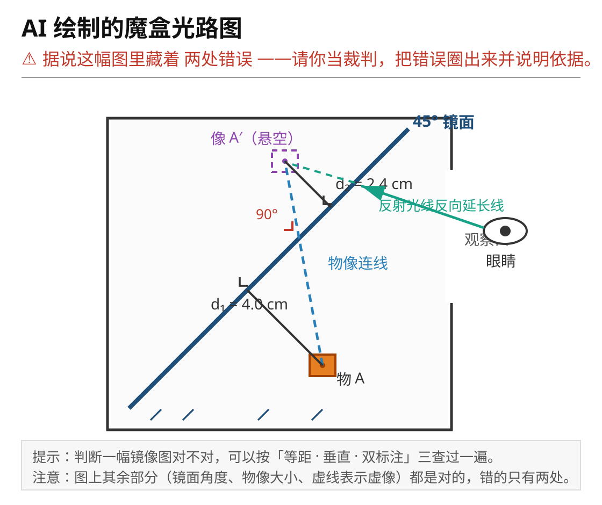
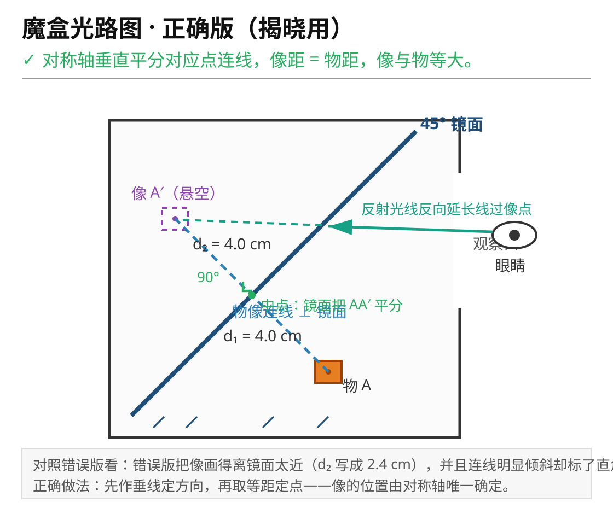

用一次实验拿到证据，用一个数学模型说清"像在哪"，再用这个模型设计一件能骗过眼睛的装置。
物理负责给证据（实验测出像的位置），数学负责给语言（用对称和坐标说清规律）。
一件可演示的镜像装置 + 双标注设计图 + 一句建模说明。
| 环节 | 做什么 | 建议用时 |
|---|---|---|
| 一 入项·魔盒挑战 | 看视频，写下猜想 | 5 分钟 |
| 二 探究·成像规律与虚像 | 三步实验，归纳等大、等距、连线垂直，搞懂虚像 | 12 分钟 |
| 三 建模·把对称交给数学 | 点化 → 建系 → 归纳 → 一般化 → 拆穿魔盒 | 13 分钟 |
| 四 反馈·三关检验 | 会画、懂原理、会迁移 | 8 分钟 |
| 五 结项启动·任务发布 | 领约束卡，认领备选题 | 7 分钟 |
| 次数 | 物到镜面 d₁/cm | 像到镜面 d₂/cm | 连线与镜面垂直？ | 像与物等大？ | 光屏能接到像？ |
|---|---|---|---|---|---|
| 1 | |||||
| 2 | |||||
| 3 |
| 次数 | 物点 A (a, b) | 像点 A′ (a′, b′) | a 与 a′ | b 与 b′ |
|---|---|---|---|---|
| 1 | (,) | — | — | — |
| 2 | (,) | — | — | — |
| 3 | (,) | — | — | — |
| 刚才实验测出来的（物理语言） | 轴对称的性质（数学语言） |
|---|---|
| 像与物等大 | 翻折后完全重合 → 两个图形全等 |
| 像到镜面的距离 = 物到镜面的距离 | 对称轴平分两个对应点的连线 |
| 像与物的连线垂直于镜面 | 对称轴垂直于两个对应点的连线 |


两面 45° 镜面两次反射成像，像与物经过两次轴对称。
材料：硬纸板、两面小镜、胶带
盒内 45° 斜镜让盒底物品的像"悬浮"在上方——就是课首那个盒子的复刻。
材料：鞋盒、一面小镜、小物件
三面镜围成三棱镜筒，多次对称成像。
材料：纸筒、三面窄镜、彩色碎片
镜面遮挡物体一半，靠对称补全视觉。
材料：纸板、一面小镜